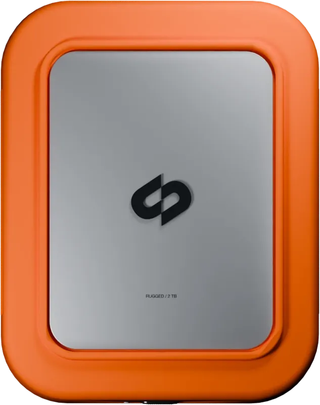
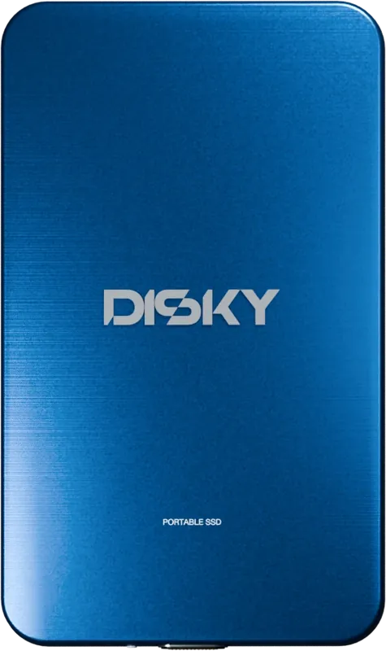
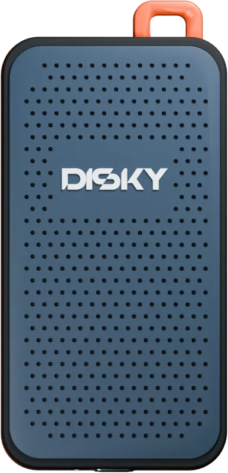
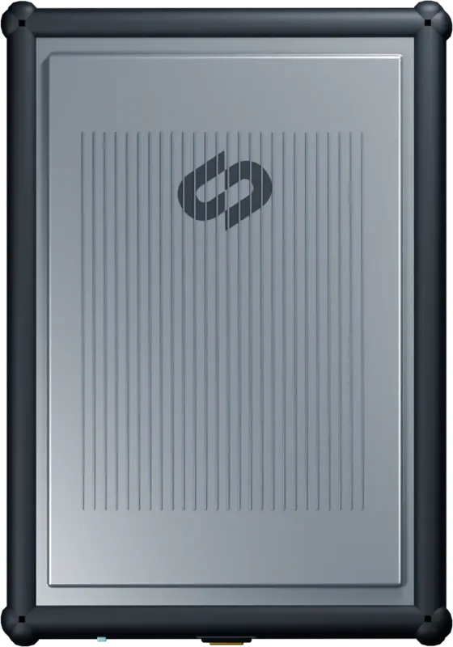
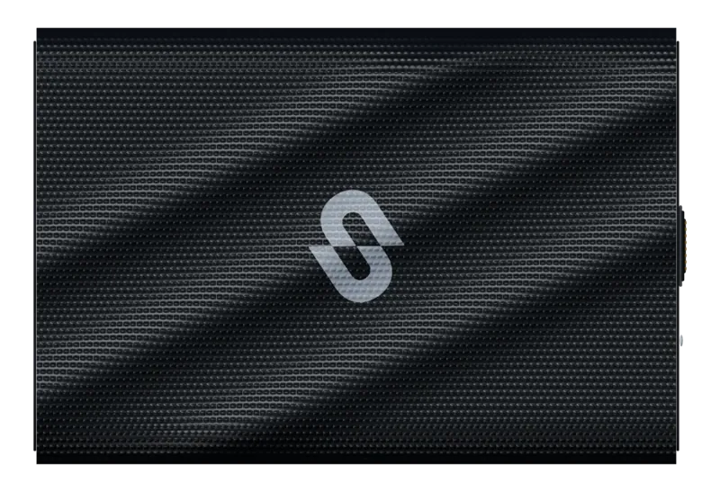
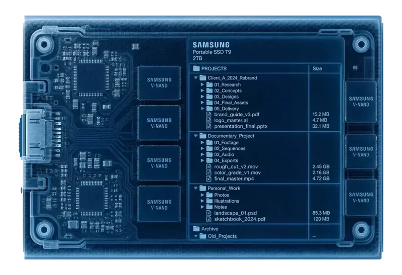

Plug a drive in — once.
Connect a drive and catalog it locally. Scanning reads your files without changing them. Copy, export and cleanup actions are separate operations you choose.
Scanning reads your files without changing them
Well — maybe not nothing. Plug each drive in once, then search it forever while it sits in the drawer.






Three steps, then you never plug a drive in to search again.
Connect a drive and catalog it locally. Scanning reads your files without changing them. Copy, export and cleanup actions are separate operations you choose.
It records every file: names, folders, projects — and reads what's inside your footage and photos, so you can find a shot by what it shows. All of it stays on your Mac.
Put the drive back in the drawer. The catalog lives in Disky, so every search after that finds the exact drive and path with nothing connected — across all of them at once.
Cache CleanerReclaim the space your apps left behind. Review caches and developer leftovers, then choose what goes to Trash.
WorldMap Disky reads the location hidden in your photos and footage and pins every shoot where it happened. Zoom from the whole world down to a single clip on a single drive.
On EventThe shoot is wrapped. Your backup should be, too. Copy complete camera cards to up to two destinations, verify every file and hand off with a report.
Disk Speed Test A native benchmark measures true read and write speed in seconds — no caches, no guesswork. So the big copy job lands on the right drive.
DISKY processes your catalog and AI search locally. Model downloads, update checks and license activation use network connections. Cataloging does not upload your footage. See the privacy policy for details.
Native Apple Silicon · Local catalog · Offline search
Placeholder quotes and AI-generated portraits. These are not real customer reviews.
That's the goal — and it's just getting started. Any feature you wish existed? Hit us up, and we'll make it happen.
Suggest a feature →Real people read every message — the best ideas ship.
Wishes land in our inbox, we rewrite them so nobody is identifiable — and put them up here. What's moving through right now:
Rewritten by hand, no names, no numbers — and no delivery promise. What's on here can still change.